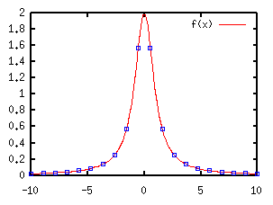
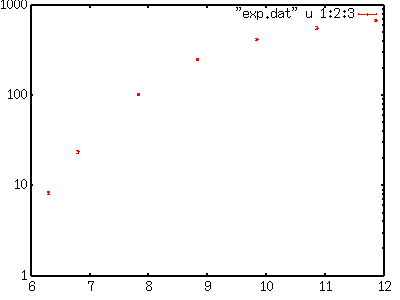
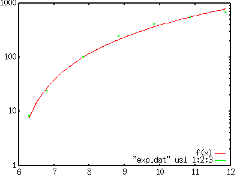

<!DOCTYPE HTML PUBLIC "-//W3C//DTD HTML 4.01 Transitional//EN">
<html lang="ja">
<head>
<title> gnuplot / misc (2) </title>
<!-- Generated 1999/ 9/ 21 -->
<!-- $Id: misc2.html,v 1.12 2005/11/20 08:04:36 kawano Exp $ -->
<meta http-equiv="content-type" content="text/html;charset=iso-2022-jp">
<link rel="stylesheet" href="style-new.css" type="text/css">
</head>
<body>

<table width="100%" border="0" cellpadding="0" cellspacing="0">
<tr><td bgcolor="#cccc90" width="320">
    <div align="left">
    <a href="index.html">
    
    </a></div></td>
    <td bgcolor="#cccc90">
      <div align="center"><h3> - not so Frequently Asked Questions - </h3> </div>
      <div class="update"> update 2004/9/16 </div>
    </td>
</tr>
<tr><td bgcolor="#fae8ba"></td>
    <td bgcolor="#fae8ba"><div class="navi"> 
<a href="index.html">           HOME </a> |
<a href="intro/index.html">     INTRODUCTION </a> |
<a href="general.html">         INFORMATION </a> |
<a href="gallery/index.html">   GALLERY </a> |
<a href="misc2-e.html">         ENGLISH </a>
</div></td></tr>
</table>
<hr class="topsep">


<table width="100%" border="0" cellpadding="0" cellspacing="0">
<tr><td id="menu">
 <p> not so FAQ</p>
  <ul>
    <li><a href="legend.html">      $BK^Nc(B(Legend) </a>
    <li><a href="tics.html">        $BL\@9(B(Tics) </a>
    <li><a href="label.html">       $B%i%Y%k(B(Label) </a>
    <li><a href="plot1.html">       2$B<!85%W%m%C%H(B </a>
    <li><a href="plot3d.html">      3$B<!85%W%m%C%H(B </a>
    <li><a href="polar.html">       $B6K:BI8%W%m%C%H(B </a>
    <li><a href="parametric.html">  $BG^2pJQ?tI=<((B </a>
    <li><a href="datafile.html">    $B%G!<%?%U%!%$%k$N?tCM(B </a>
    <li><a href="postproc.html">    $B?^$rIA$$$?$=$N8e$O(B</a>
    <li><a href="misc1.html">       $B$=$NB>(B </a>
    <ul>
      <li><a href="misc1.html#9.1">
           3$B9`1i;;;R(B </a>
      <li><a href="misc1.html#9.1a">
           $BES@Z$l$?4X?t(B </a>
      <li><a href="misc1.html#9.2">
           $B%k!<%W(B </a>
      <li><a href="misc2.html#9.3">
           $B:G>.<+>hK!(B($B$=$N(B1) </a>
      <li><a href="misc2.html#9.4">
           $B:G>.<+>hK!(B($B$=$N(B2) </a>
      <li><a href="misc3.html#9.5">
           dumb$BC<Kv(B  </a>
      <li><a href="misc4.html#9.6">
           $BB?$/$N@~<o(B </a>
      <li><a href="misc4.html#9.7">
           $B?tCM$N=q$-9~$_(B </a>
    </ul>
  </ul>
 <br>
</td>


<td id="content">


<h1><a name="top"> $B$=$NB>$b$m$b$m(B ($B$=$N(B2) </a></h1>

<div align="center">
<a href="misc1.html"> 1 </a> | 
<a href="misc2.html"> 2 </a> | 
<a href="misc3.html"> 3 </a> |
<a href="misc4.html"> 4 </a>
</div>


<h2><a name="9.3"> $BHs@~7A4X?t$r;H$C$?:G>.<+>h%U%#%C%F%#%s%0$NJ}K!(B($B$=$N(B1)$B!%(B</a></h2>

<p> gnuplot3.7$B$N6/NO$J5!G=$N0l$D$K!$4X?t$N%U%#%C%F%#%s%0(B($BEv$F$O$a(B)$B$,$"$j(B
     $B$^$9!%%Q%i%a!<%?$r4^$s$@4X?t$rMQ0U$9$k$H!$%G!<%?%U%!%$%k$N?tCM$KBP(B
     $B$7$F:GE,$J%Q%i%a!<%?$N?tCM$r<+F0E*$KC5:w$7$^$9!%4X?t$O(Bgnuplot$B$GI=8=(B
     $B$G$-$k$b$N$J$i!$@~7A!&Hs@~7A$rLd$$$^$;$s!%$3$3$G$O!$(B
     f(x)=a/(1+b*x*x) $B$H$$$&(BLorentz$B7?$N4X?t$r;H$C$?Nc$r<($7$^$9!%$3$N4X(B
     $B?t$N%Q%i%a!<%?$O!$(B<i>a</i>$B$H(B<i>b</i>$B$N(B2 $B$D$G$9!%(B</p>

<p>$B%5%s%W%k$N%G!<%?$H$7$F!$(B<i>a</i>=2, <i>b</i>=1 $B$NCM$r$3$N4X?t$KM?$($F(B
     $B7W;;$7$?$b$N$rMQ0U$7$^$7$?!%$3$N?tCM$K4X?t$r%U%#%C%H$7$?$H$-$K!$(B
     <i>a</i>=2, <i>b</i>=1$B$H$$$&7k2L$,F@$i$l$k$+$I$&$+$r8+$h$&$H$7$F$$(B
     $B$^$9!%(B</p>

<pre class="file">
-10.000000    0.019802
 -8.947370    0.024674
 -7.894740    0.031582
 -6.842110    0.041828
 -5.789470    0.057941
 -4.736840    0.085333
 -3.684210    0.137236
 -2.631580    0.252359
 -1.578950    0.572561
 -0.526316    1.566160
  0.526316    1.566160
  1.578950    0.572561
  2.631580    0.252359
  3.684210    0.137236
  4.736840    0.085333
  5.789470    0.057941
  6.842110    0.041828
  7.894740    0.031582
  8.947370    0.024674
 10.000000    0.019802
</pre>

<p>$B$3$N?tCM$r!$(B"exp.dat" $B$H$$$&L>A0$N%U%!%$%k$KJ]B8$7$F$*$-$^$9!%:G=i(B
$B$K!$(Bgnuplot$B$GEv$F$O$a$?$$4X?t$rDj5A$7$^$9!%C5:w$9$k%Q%i%a!<%?$NJQ?tL>(B
$B$O!$(Bx$B$d(Bt$BEy$N(Bgnuplot$B$,;H$&FCJL$JJQ?t$G$J$1$l$P2?$G$b9=$$$^$;$s!%4X?t%U%#%C(B
$B%F%#%s%0$K$O!$(B<tt> fit </tt>$B%3%^%s%I$r;H$$$^$9!%%*%W%7%g%s$K!$C5:w$7$?(B
$B$$%Q%i%a!<%?L>$r(B <tt> via </tt>$B$KB3$1$FM?$($^$9!%(B</p>


<p> $B%U%#%C%H$r9T$&%G!<%?%U%!%$%k$KBP$7$F$O!$(B<tt>using</tt>,
     <tt>index</tt>, <tt>every</tt>$BEy$N%*%W%7%g%s$,;H$&$3$H$,$G$-!$%G!<(B
     $B%?%U%!%$%kCf$NG$0U$N?tCM$r%U%#%C%F%#%s%0$NBP>]$K$9$k$3$H$,$G$-$^$9!%(B
     $B$^$?!$%G!<%?$N8m:9$rM?$($k;v$G!$3FE@$G$N=E$_$rJQ$($k$3$H$,$G$-$^$9!%(B
     $B%G!<%?$N=E$_$O!$8m:9&R$N(B2$B>h$N5U?t(B($B&R(B^{-2})$B$H$J$j$^$9!%=E$_IU$-:G>.(B
     $B<+>hK!$r9T$&$?$a$K$O!$%G!<%?%U%!%$%k$N(B3$B%+%i%`L\$K8m:9$rMQ0U$7!$(B<tt>
     fit f(x) "exp.dat" using 1:2:3 via a,b </tt>$B$N$h$&$K(B<tt>using</tt>
     $B$r;H$C$F8m:9$N%+%i%`$r;XDj$7$^$9!%8m:9$rM?$($J$$>l9g$O!$A4%G!<%?$N(B
     $B=E$_$O(B1$B$K$J$j$^$9!%(B</p>


<pre class="sample">
gnuplot&gt; f(x)=a/(1+b*x*x)
gnuplot&gt; fit f(x) "exp.dat" via a,b


Iteration 0
WSSR        : 1.43879           delta(WSSR)/WSSR   : 0
delta(WSSR) : 0                 limit for stopping : 1e-05
lambda      : 0.201184

                         .......

Final set of parameters            Asymptotic Standard Error
=======================            ==========================

a               = 2                +/- 5.236e-07    (2.618e-05%)
b               = 0.999998         +/- 7.397e-07    (7.397e-05%)


correlation matrix of the fit parameters:

               a      b      
a               1.000 
b               0.837  1.000 
</pre>


<p> $BESCf!$%U%#%C%F%#%s%0$N%m%0$,D9!9$H2hLL$rN.$l$F9T$-$^$9!%F1$8FbMF$,!$(B
     fit.log $B$H$$$&L>A0$N%U%!%$%k$K$bF1;~$K=q$-=P$5$l$F$$$^$9!%%U%#%C%F%#(B
     $B%s%0$,$&$^$/=*$l$P!$F@$i$l$?%Q%i%a!<%?$NCM$H!$$=$l$i$NAj4X(B($B6&J,;6(B)
     $B9TNs$,=PNO$5$l$^$9!%>e$NNc$G$O!$(B<i>a</i>=2, <i>b</i>=1$B$,$[$\@5$7$/(B
     $BF@$i$l$F$$$^$9!%(B</p>

<p> $BF@$i$l$??tCM$O!$JQ?t(B<i>a,b</i>$B$KF~$C$F$$$^$9$N$G!$4X?t(Bf(x)$B$r%G!<%?$H(B
     $B$H$b$K%W%m%C%H$9$k$H!$%U%#%C%F%#%s%0$N7k2L$r%W%m%C%H$G$-$^$9!%(B</p>

<pre class="sample">
gnuplot&gt; plot f(x) with lines, "exp.dat" using 1:2 w points
</pre>

<div align="center"></div>


<div class="top"><a href="misc2.html#top"></a></div>
<h2><a name="9.4"> $BHs@~7A4X?t$r;H$C$?:G>.<+>h%U%#%C%F%#%s%0$NJ}K!(B($B$=$N(B2)$B!%(B</a></h2>


<p> $B<!$O$b$&>/$76qBNE*$JNc$rMQ$$$^$9!%<!$N$h$&$J<B83%G!<%?$,$"$j$^$9!%$3(B
     $B$N%G!<%?$K4X?t(Bf(x)=c*(x-a)**b$B$r%U%#%C%H$7!$JQ?t(B<i>a,b,c</i>$B$NCM$r5a(B
     $B$a$^$9!%(B</p>

<pre class="file">
# X        Y     Z
  6.295    8.4   0.3
  6.795   23.9   0.7
  7.826  104.0   3.0
  8.830  255.0   8.0
  9.841  421.0  13.0
 10.860  566.0  18.0
 11.864  690.0  22.0
</pre>

<p>$B3F%G!<%?E@$N=E$_$O!$8m:9$NCM$r(BZ$B$H$9$k$H!$(B1/Z*Z$B$H$J$j$^$9!%=>$C$F8m(B
$B:9$,Bg$-$$Dx=E$_$O>.$5$/$J$j$^$9!%(B</p>

<p>$B$^$:!$<B83CM$@$1$r%W%m%C%H$7$F$=$N798~$r8+$^$9!%(B</p>

<pre class="sample">
gnuplot&gt; set log y
gnuplot&gt; plot "exp.dat" using 1:2:3 w yerrorbars
</pre>

<div align="center"></div>

<p>$B<!$KJQ?t(B<i>a,b,c</i>$B$N=i4|CM$r7h$a$^$9!%(Bgnuplot$B$N%U%#%C%F%#%s%0$G$O!$(B
     $B=i4|CM$rM?$($F$$$J$$$HA4$F(B1$B$H$7$F7W;;$r;O$a$^$9!%$7$+$7!$H?I|2s?t$,(B
     $BB?$/$J$C$?$j>l9g$K$h$C$F$O7k2L$,=P$J$+$C$?$j$7$^$9$N$G!$$[$I$[$I$N(B
     $B=i4|CM$r7h$a$F$*$$$?J}$,$&$^$/9T$-$^$9!%(Bf(x)=c*(x-a)**b$B$r$"$F$O$a$^(B
     $B$9$N$G!$>e$N%W%m%C%H$r8+$l$P!$(B<i>a</i>$B$OBgBN(B6$B0L$@$m$&$HA[A|$G$-$^$9(B
     (<i>x</i>=<i>a</i>$B$G4X?t$O%<%m$K$J$k$O$:$J$N$G(B)$B!%(B<i>x</i>$B$,(B1$BA}$($k(B
     $B$H?t==G\$K$J$C$F$$$k$N$G!$(B<i>b</i>$B$O(B1$B!A(B2$BDxEY$G$7$g$&!%$^$?!$(B
     <i>c</i>$B$O(B10$B$N%*!<%@!<(B(f(x)$B$NBP?t$r$H$C$?$iJ,$+$j$^$9(B)$B!$$3$l$r=i4|(B
     $BCM$K$7$F!$(Bfit $B$r<B9T$7$^$9!%(B</p>

<pre class="sample">
gnuplot&gt; a=6
gnuplot&gt; b=1
gnuplot&gt; c=10
gnuplot&gt; f(x)=c*(x-a)**b
gnuplot&gt; fit f(x) "exp.dat" using 1:2:3 via a,b,c
</pre>

<p>17$B2s$NH?I|$N8e$K7W;;$,<}B+$7$?%a%C%;!<%8$,=P!$:G=*E*$J%Q%i%a!<%?$NCM(B
     $B$H$=$N6&J,;6$,=PNO$5$l$^$9!%F@$i$l$?CM$O(B<i>a</i>=5.77,
     <i>b</i>=1.89, <i>c</i>=25.8 $B$G$7$?$N$G!$2>Dj$7$?=i4|CM$O$^$:$^$:$@$C(B
     $B$?$h$&$G$9(B($B%W%m%C%H$7$F$_$k$H$"$^$j%G!<%?$K$"$C$F$$$J$$$N$G$9$,!%!%!%(B)
     </p>

<pre class="sample">
After 17 iterations the fit converged.
final sum of squares of residuals : 90.8196
rel. change during last iteration : -9.71916e-09

degrees of freedom (ndf) : 4
rms of residuals      (stdfit) = sqrt(WSSR/ndf)      : 4.76497
variance of residuals (reduced chisquare) = WSSR/ndf : 22.7049

Final set of parameters            Asymptotic Standard Error
=======================            ==========================

a               = 5.76731          +/- 0.176        (3.051%)
b               = 1.89369          +/- 0.2127       (11.23%)
c               = 25.7956          +/- 9.807        (38.02%)


correlation matrix of the fit parameters:

               a      b      c      
a               1.000 
b              -0.944  1.000 
c               0.975 -0.975  1.000 
</pre>

<p> $B$3$N7k2L$r!$@hDx$N%W%m%C%H$K=E$M$FI=<($7$^$9!%(B</p>

<pre class="sample">
gnuplot&gt; plot f(x),"exp.dat" using 1:2:3 w yerrorbars
</pre>

<div align="center"></div>

<div class="top"><a href="misc2.html#top"></a></div>
</td></tr></table>
<hr class="topsep">

</body>
</html>

